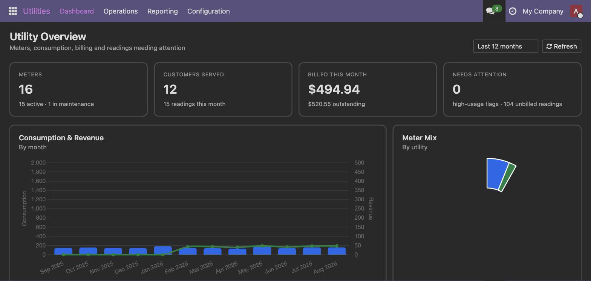
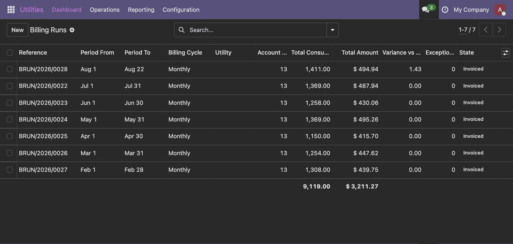

Meter to cash for water, electricity, gas and internet providers — service accounts, readings that get validated instead of trusted, tariffs that express real pricing, and billing runs you approve before a single invoice exists.
Not the customer, and not the meter. One customer can hold several accounts — electricity and water, or two premises — each with its own location, tariff, billing cycle, deposit, balance and connection status (pending, active, suspended, disconnected, closed, transferred).
Meters attach to accounts, and every installation, replacement and removal is kept as history: who fitted it, when, at what reading, and why. Replacing a meter closes the old one at its final reading and opens the new one at its initial reading in a single step, so consumption continuity survives.

Account number, service location with coordinates, connection status, tariff, billing cycle, deposit, balance and full invoice and payment history.
Type, manufacturer, model, installation date, opening reading, digit count, communication type, calibration and inspection dates — plus every installation and replacement as a dated record.
Actual, estimated, customer-supplied, remote, opening, closing, replacement and corrected — each validated on save against nine different checks.
Flat or tiered with validated blocks, standing charges, taxes, effective dates, plus fees, penalties, discounts, subsidies and minimum/maximum charges.
Compute, review against last month with warnings, approve, then invoice. Reproducible, and an account cannot be billed twice.
A proper utility bill PDF with previous and current reading, consumption and tariff breakdown — and an account statement as a running ledger.
Every reading is checked when it is saved, and flagged rather than refused:
| Status | What it means |
|---|---|
| Normal | Nothing unusual. |
| Review required | Abnormally high or low, zero consumption, a duplicate, or read outside the expected window. |
| Estimated | Not an actual read — the account's estimation method was used. |
| Invalid | Cannot be used for billing. |
| Suspected tampering | The pattern suggests interference. |
Exceptions go to a review queue. Only billing and manager roles can approve or correct one, and every correction is tracked.
When a meter cannot be read, the account's estimation method applies — previous period, three or six month average, same period last year, or a configured minimum. Estimated bills are labelled as such on the PDF.
When a real reading finally arrives after estimates have already been invoiced, the difference is carried onto the next bill as an explicit adjustment line that references the invoices it corrects. Most systems quietly leave that money wrong.

Billing goes through a run, never straight from readings — so a bad month is caught before any invoice does.
Recomputing a draft run is idempotent: same inputs, same lines, no duplicate invoices. One line per account per run means an account cannot be billed twice.
Account, period, previous and current reading, consumption, tariff breakdown, fixed charges, taxes, previous balance and amount due.
The ledger a customer asks for: date, transaction, debit, credit, running balance.
Invoice issued, payment received, overdue notice, meter-reading reminder and estimated-bill notice, with a channel preference per account and a log of everything sent.
| Role | Can do |
|---|---|
| Field Technician | Record meter readings, install and replace meters. |
| Billing Specialist | Everything above, plus review reading exceptions, run billing, issue invoices and statements. |
| Utility Manager | Full access — tariffs, billing cycles, approving runs, corrections and write-offs. |
| Technical name | What it is |
|---|---|
| utility_management | Utility Management — the complete app. Everything on this page is in this one module. |
So you know before you buy. Not included in this version: a customer self-service portal, mobile/offline meter reading with routes, collections and disconnection/reconnection workflow, and GIS mapping. Coordinates are stored but not yet displayed on a map.
159 automated checks ship inside the module under tests/ — six suites covering service accounts, reading validation, tariff charges, billing runs, reports and dashboard, and notifications. Every suite rolls its transaction back, so you can run them on your own database:
odoo shell -d yourdb --no-http < tests/p1_service_account_check.py
A full README.md ships with the module: install, roles, the order to set things up in, and everyday use.
B&T Solutions · support@bandtsolutions.com · bandtsolutions.com
Licence OPL-1. Version 19.0.1.3.0.